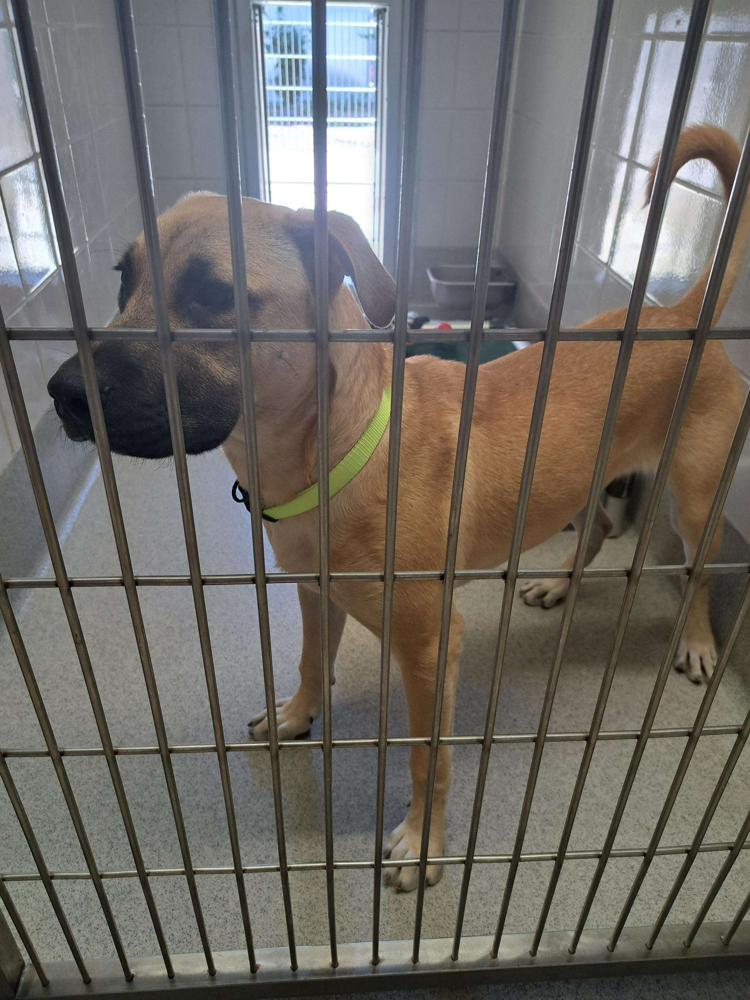

Anon Functions + Callbacks
Challenges
Nothing really, just kind of vibing with this one.
Results
Overall, it was a nice refresher on functions, especially anonymous ones. I forgot how practical they are. I mean, just look at that console, stupdendous!
Here's a dog pic to make up for the lack of effort! It's my mom's new adoption.